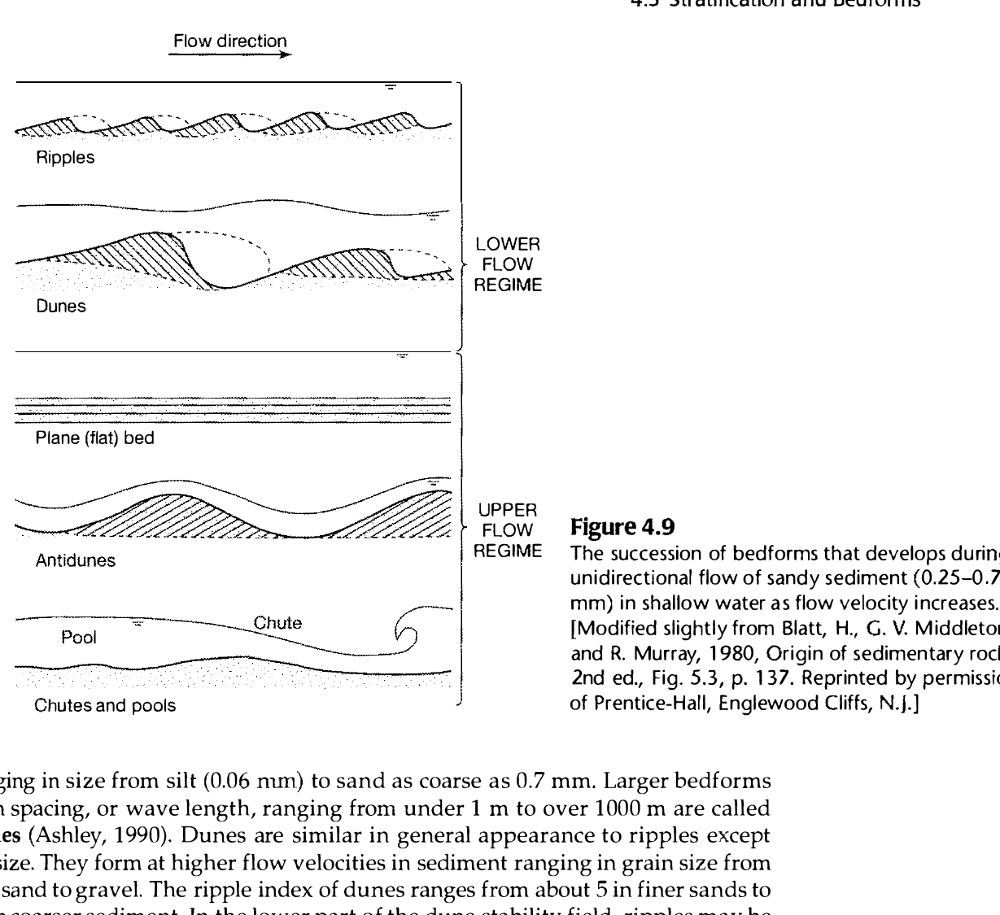

The correct option is (b) A-1, B-4, C-2, D-3 (with equivalent permutation (d)).
In fluvial hydrodynamics and sediment transport (pioneered by Simons, Richardson & Albertson, 1961, and codified in modern sedimentology by Sam Boggs Jr., Blatt, Middleton & Murray, and Southard), the succession of sedimentary bedforms in open sandy alluvial channels is governed by the Froude number:
The bedforms align across three fundamental hydraulic regimes:

The Froude number ($Fr$) determines whether small surface gravity waves (ripples) can propagate upstream:
Current ripples are small, triangular bedforms with wavelengths $\lambda < 60\text{ cm}$ (typically 5–20 cm) and heights $H < 4\text{ cm}$. They form in sediment finer than 0.7 mm at very low shear stresses ($Fr$ typically $0.1\text{ to }0.3 \ll 1$). Water surface is completely undisturbed.
As flow velocity increases within the lower flow regime, larger bedforms (dunes or megaripples) develop with wavelengths from 0.6 m to tens of meters and heights from 5 cm to several meters. In the lower stability field of dunes, smaller current ripples migrate along the gentle stoss side ($10^\circ\text{--}15^\circ$) of the dunes, producing dunes with superimposed ripples. Because flow is still tranquil, $Fr \ll 1$ (typically $0.3\text{ to }0.6$).
In the transition zone between lower and upper flow regimes ($Fr \approx 1.0$), intense turbulence and high velocity cause sediment to be swept off the dune crests faster than it can be deposited on the slip face. The avalanching avalanche face disappears, dune crests are eroded, and bed relief is dramatically reduced. These relict, flattened mounds are diagnostic of critical flow conditions ($Fr = 1$).
Upon entering the upper flow regime ($Fr \ge 1$), all large bed roughness elements are obliterated, yielding a flat, planar sediment surface known as the upper plane bed. Intense sediment transport occurs in a thin, highly concentrated laminar-like boundary layer known as sheet flow. Grains slide and roll over each other, aligning their long axes parallel to the flow to produce internal parallel lamination and primary current lineation (parting lineation).
| Bed Form (List-I) | Flow Regime Classification | Water Surface vs Bed Phase | Froude Number ($Fr$) (List-II) | List-II Code |
|---|---|---|---|---|
| A. Dunes with superimposed ripples | Lower Flow Regime (moderate shear) | Out-of-phase (trough over crest) | $Fr \ll 1$ (Subcritical) | 1 (or 3) |
| B. Washed out dunes | Transition Regime (unstable) | Transition / flattening | $Fr = 1$ (Critical) | 4 |
| C. Plane bed (Upper flat bed) | Upper Flow Regime (sheet flow) | Planar / slight standing waves | $Fr \ge 1$ (Supercritical) | 2 |
| D. Ripples | Lower Flow Regime (lowest shear) | Undisturbed / out-of-phase | $Fr \ll 1$ (Subcritical) | 3 (or 1) |
Sam Boggs Jr., Principles of Sedimentology and Stratigraphy (4th ed., Chapter 4: Sedimentary Structures, pp. 82–85):
"The hydraulic conditions that generate ripples and dunes take place at Froude numbers ≪ 1 (lower flow regime). With increasing flow velocity, dunes are washed out in a transition phase (F ≈ 1) and give way to an upper flow regime stage of flow, which takes place at Froude numbers ≥ 1 (plane bed followed by antidunes)."
D. B. Simons, E. V. Richardson, and M. L. Albertson (1961), Forms of Bed Roughness in Alluvial Channels:
"1. Lower Flow Regime: Ripples (F ≪ 1), Dunes with superimposed ripples (F ≪ 1), Dunes (F < 1).
2. Transition: Washed-out dunes (F = 1).
3. Upper Flow Regime: Plane bed (F ≥ 1), Antidunes (F > 1), Chutes and pools (F ≫ 1)."